Prof. Dr. Zahoor Ahmad Azhar was one of Pakistan's most respected authorities on Arabic language and literature, a scholar whose career bridged the classical tradition of Arabic letters with modern academic institutions in Lahore. Over four decades, he shaped generations of students as a teacher, administrator, editor, and public intellectual.
From a Village Boy to the Heights of Fame
By his own account, Dr. Azhar's life journey began humbly in a small village: farming the land and tending to animals, all while managing and prioritising his studies. That early discipline carried him toward Oriental College, University of the Punjab. His breakthrough moment came in February 1974, when heads of state from across the Muslim world gathered in Lahore for the Second Islamic Summit Conference. Before a huge public crowd at what was then Lahore Stadium (later renamed Gaddafi Stadium in honour of the visit), he delivered an impromptu Arabic translation of an address by Libya's Colonel Muammar Gaddafi, an act of scholarly quick thinking that carried his name to national and international recognition.
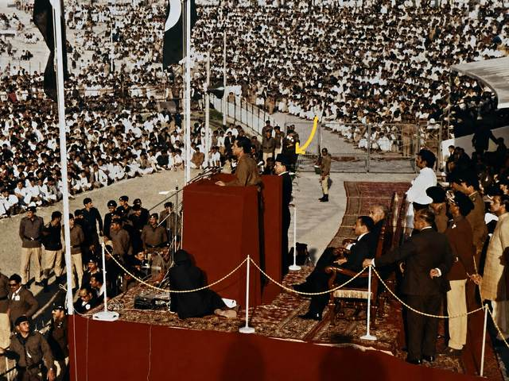
Colonel Gaddafi's address at the Second Islamic Summit Conference, Lahore, February 1974 (Dr. Azhar is marked on the stage)
He began teaching in 1963 as a Lecturer in Islamic Studies at Government College, Bahawalpur, before joining the University of the Punjab, where he rose over two decades from Lecturer to Professor of Arabic. He went on to serve as Chairman of the Department of Arabic and then Principal of Oriental College (1995–1997), one of the subcontinent's oldest centres of Islamic and Oriental learning, founded in 1870, and as Dean of the Faculty of Islamic and Oriental Learning. He later became Principal of the College of Shariah & Islamic Sciences (COSIS) (2004–2006) and Dean of the Faculty of Languages at Minhaj University Lahore, and served as Dean, Faculty of Arabic & Islamic Studies at The University of Faisalabad. In 2010, the University of the Punjab conferred on him the title of Professor Emeritus and appointed him Professor on its historic Hujveri Chair.
Beyond the classroom, Dr. Azhar was a prolific editor and publisher of scholarly research, steering multiple volumes of the research journal Mujalla Tahqeeq through the 1980s and early 1990s, and a widely read columnist, contributing analysis on international affairs, the Islamic world, and South Asian geopolitics to Pakistani and Arab newspapers for decades. He also served as President of Aalmi Rabta-e-Adab-e-Islami (the World League of Islamic Literature), Pakistan from 1993 to 2004, representing the country at conferences across the Muslim world, and regularly worked as an Arabic interpreter at presidential and prime ministerial level.
In recognition of his services to scholarship and education, he was honoured with Pakistan's civil award, the Sitara-i-Imtiaz, on 14 August 1986. His book Fasahat-e-Nabawi was also separately conferred Pakistan's National Best Book Award for Sira in 1984.
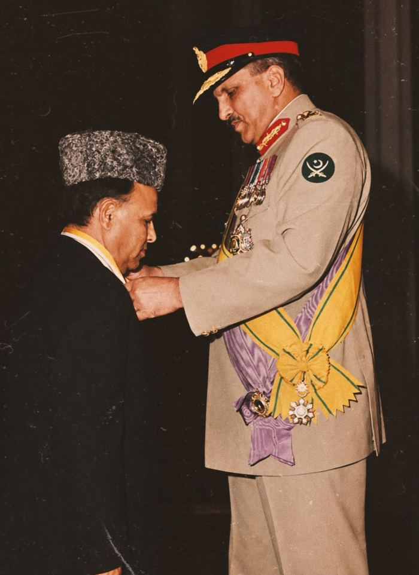
Investiture of the Sitara-i-Imtiaz, 14 August 1986 – Pakistan's Independence Day, the traditional occasion for the country's civil honours. The award was conferred by the Government of Pakistan and presented by President General Muhammad Zia-ul-Haq in recognition of his services to Arabic scholarship and education.
He held a firm educational philosophy: that no society can progress without serious researchers and scholars, and that mastery of Arabic, Persian, and English was essential for presenting an authentic and informed understanding of Islam to the world. This conviction guided his teaching and his public writing alike.
Dr. Zahoor Ahmad Azhar passed away on 7 December 2023. His funeral prayer was held at the Jami Masjid, B-Block, Punjab University Town-1, Lahore. His passing was publicly mourned by Shaykh-ul-Islam Dr. Muhammad Tahir-ul-Qadri, founder of Minhaj-ul-Quran International, who remembered him as an outstanding teacher whose scholarly services would be remembered for a long time to come.
Career
A Career in Service of Scholarship
A timeline of the institutions and roles through which Dr. Azhar shaped Arabic and Islamic scholarship in Pakistan.
1963
Lecturer, Islamic Studies
Government College, Bahawalpur
Began his teaching career before returning to Lahore to join the University of the Punjab later that same year.
1963 – 1983
Lecturer to Professor of Arabic
University of the Punjab, Lahore
Rose through the academic ranks (Lecturer, Assistant Professor, Associate Professor, and finally Professor of Arabic) while also teaching part-time at the Civil Services Academy of Pakistan and as Visiting Professor at the Ulama Academy, Badshahi Mosque, Lahore.
1978 – 1982
Visiting Professor, Al-Azhar University
Cairo, Egypt
Taught as a Visiting Professor at Al-Azhar University, one of the Islamic world's oldest and most prestigious centres of learning, strengthening his standing among Arab academic institutions.
Academia
Chairman, Department of Arabic
Oriental College, University of the Punjab
Led the Arabic department, teaching and guiding students in classical and modern Arabic language and literature, and establishing himself as a leading authority in the field.
1983 – 1992
Editor & Publisher, Mujalla Tahqeeq
Research Journal
Oversaw and published numerous volumes (Jild 5–15) of the scholarly research journal Mujalla Tahqeeq, contributing to the wider ecosystem of Arabic and Islamic research publishing in Pakistan.
1995 – 1997
Principal, Oriental College
University of the Punjab, Lahore
Headed one of the subcontinent's oldest centres of Islamic and Oriental learning, founded in 1870 (his name recorded on the college's official roll of principals), and served as Dean of the Faculty of Islamic and Oriental Learning.
1993 – 2004
President, Aalmi Rabta-e-Adab-e-Islami (Pakistan)
World League of Islamic Literature
Led the Pakistan chapter of the World League of Islamic Literature, representing the country at international conferences across Egypt, Saudi Arabia, Morocco, Jordan, Iraq, Iran, and the UAE, including a special 2003 invitation from Sheikh Zayed bin Sultan Al Nahyan to deliver a month of Ramadan lectures in the UAE.
International
Hosted the Moroccan Delegation
Lahore, Pakistan
Received a visiting delegation from Morocco in Pakistan, part of his lifelong work strengthening Arabic literary and cultural ties between the two countries.
Leadership
Dean, Faculty of Arabic & Islamic Studies
The University of Faisalabad
Continued his academic leadership at The University of Faisalabad, where Fasahat-e-Nabawi was later published.
2004 – 2006
Principal, College of Shariah & Islamic Sciences (COSIS)
Minhaj-ul-Quran / Minhaj University Lahore
Headed COSIS, guiding the institution's academic direction in Shariah and Islamic sciences and mentoring M.Phil and postgraduate students.
Leadership
Dean, Faculty of Languages
Minhaj University Lahore
Continued shaping language education at Minhaj University, emphasizing Arabic, Persian, and English as essential tools for scholarly and public discourse on Islam.
2008 – 2011
Speaker & Visiting Lecturer
Pakistan Military Academy (PMA), Kakul
Addressed army cadets at Pakistan's premier military academy on Islamic history, Arabic literature, and culture.
2010
Professor Emeritus & Hujveri Chair
University of the Punjab, Lahore
Conferred Professor Emeritus in Arabic by the Punjab University Syndicate in recognition of his established scholarship, and shortly after appointed Professor on the university's historic Hujveri Chair.
2018
Asia Arabic Language, Literature & Art Conference
Riyadh, Saudi Arabia
Invited by Crown Prince Mohammed bin Salman to Riyadh for the conference, representing Pakistani Arabic scholarship among delegates from across Asia in one of his final major international appearances.
1960 – 2023
Columnist
Pakistani & Arab Newspapers
Wrote extensively on international affairs, the Islamic world, and South Asian geopolitics for over six decades, right up until his passing, with columns archived across major Urdu publications including Daily Pakistan.
Impact
By the Numbers
Across six decades, Dr. Azhar's scholarship reached far beyond any single classroom or institution.
372
M.A. & M.Phil students supervised
100+
Ph.D. scholars produced
200+
Articles in the Urdu Encyclopedia of Islam
21
Rare Arabic manuscripts edited & published
His scholarship and public voice reached well beyond Pakistan:
Pakistan Egypt Saudi Arabia Morocco Algeria Jordan Iraq Iran Kuwait UAE
Wrote regularly for the national press (Nawa-i-Waqt, Jang, Daily Pakistan, and others) and for leading Arabic papers including Al-Ahram (Cairo) and Al-Jazirah (Riyadh)
President, Aalmi Rabta-e-Adab-e-Islami (Pakistan), 1993–2004, representing the country at conferences in Egypt, Saudi Arabia, Morocco, Algeria, Jordan, Iraq, Iran, Kuwait, and the UAE
Delivered a month of Ramadan lectures in the UAE in 2003 on the personal invitation of Sheikh Zayed bin Sultan Al Nahyan
Invited by Crown Prince Mohammed bin Salman to the Asia Arabic Language, Literature & Art Conference in Riyadh, Saudi Arabia, in 2018
Member, Arabic Academy, Baghdad (1992), the Punjab Public Service Commission (2000–2004), and the Provincial Zakat Council, Government of Punjab
Worked as an Arabic interpreter at presidential and prime ministerial level, and hosted PTV's religious programme Tafheem-e-Din as compere
Publications
Books & Scholarly Works
A body of written work spanning Arabic literary criticism, biography, and poetry, published between 1977 and 2017.
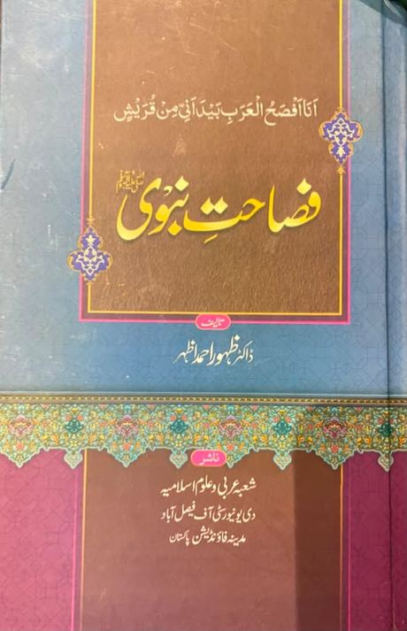
Fasahat-e-Nabawi
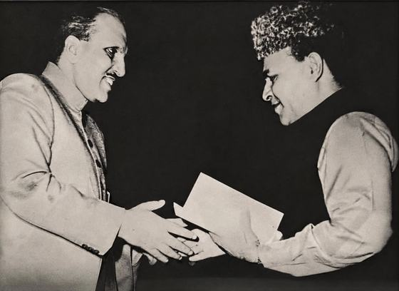
Receiving the National Best Book Award from President Zia-ul-Haq
National Best Book Award
Fasahat-e-Nabawi
Author
A scholarly study of the eloquence of the Prophet Muhammad ﷺ, published by the Department of Arabic & Islamic Sciences, University of Faisalabad, with Madina Foundation Pakistan. Conferred Pakistan's National Best Book Award, presented by President General Muhammad Zia-ul-Haq.
Further works spanning translation, poetry, and religious biography:
Dar-e-Arqam: awarded the National First Prize for this work on the Sira in 2000
Arabic translation of Allama Iqbal's life and works (3 volumes), of the biography by his son Dr. Javed Iqbal, published in Cairo, 2007
Arabic translation of Muhammad Bin Qasim, the first Urdu novel rendered into Arabic, published in 2000
Translated the Dewans of five Punjabi poets into Arabic and Urdu, 2000–2005
History of Arabic Literature in the Sub-Continent (Urdu), published by the University of the Punjab
Later works: Iqbal ki Nujoom-e-Hidayat, Islami Jamhooriat, and Deen-e-Amal
Publication records and covers compiled from Rekhta's author archive, international booksellers, and his official CV.
Interviews & Media
In His Own Words
Video interviews spanning national radio, academic conversation, and his own account of a life that began in a village and led to the halls of Oriental College, Punjab University.
►37:42
From a Shepherd to the Heights of World Fame
Fazal Awan Official · His last recorded video interview
Tells the full story of the Colonel Gaddafi speech translation and the mystery of the missing cassette recording.
►34:17
Life's Journey Began as a Shepherd: Part 1
Fazal Awan Official
Dr. Azhar recounts his early life and the path that led him from herding sheep to scholarship.
►22:18
Life's Journey Began as a Shepherd: Part 2
Fazal Awan Official
The continuation of his life story, tracing his rise through academia in Lahore.
►24:33
Interview with Prof. Dr. Zahid Munir Amir
Saroosh Zahid · Final part
A scholarly conversation on Arabic language in Pakistan, academia, and his life history at Oriental College, Punjab University.
►27:15
Radio Pakistan Interview
Radio Pakistan Official · Awaz Khazana
A broadcast interview reflecting on his career and contribution to Arabic scholarship.
Legacy
Tributes & Remembrance
"In his death, the country has been deprived of an excellent teacher and scholar who had dedicated his life to the promotion of the Islamic sciences and Arabic language. His scholarly services will be remembered for a long time to come."
Guiding Philosophy
Dr. Azhar believed no society could progress without dedicated researchers and scholars. He urged students to master Arabic, Persian, and English as the essential languages for presenting an authentic understanding of Islam to the world.
Institutional Impact
Across the University of the Punjab and Minhaj University Lahore, he trained generations of Arabic scholars, M.Phil candidates, and researchers, leaving an enduring mark on Islamic higher education in Pakistan.
Public Voice
Through decades of columns in Pakistani and Arab newspapers, he brought scholarly depth to public conversations on the Islamic world, Kashmir, and South Asian affairs.
Condolences were also offered by leaders across Minhaj-ul-Quran International, including:
Dr. Hassan Mohi-ud-Din Qadri, Chairman, Supreme Council
Dr. Hussain Mohi-ud-Din Qadri, President, MQI
Office-holders and alumni of the College of Shariah & Islamic Sciences
Gallery
Photo Gallery
A small collection of photographs from academic gatherings, lectures, and the 2018 Asia Arabic Language, Literature & Art Conference in Riyadh.
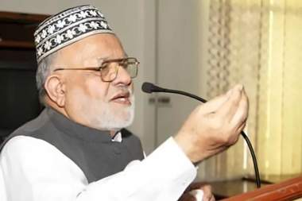
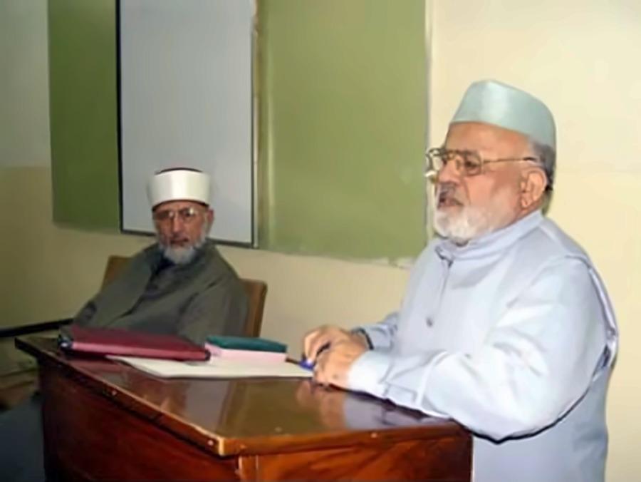
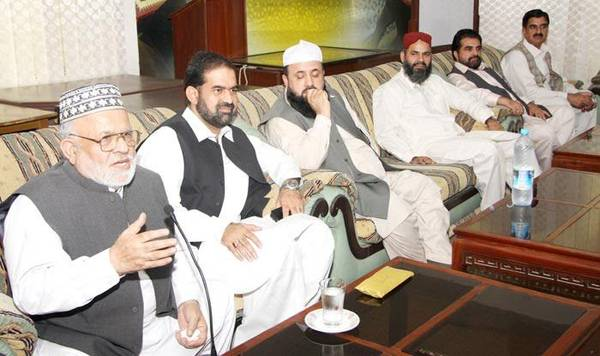
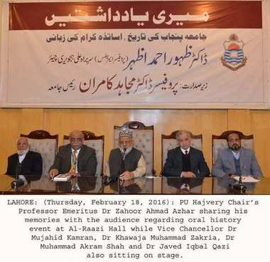
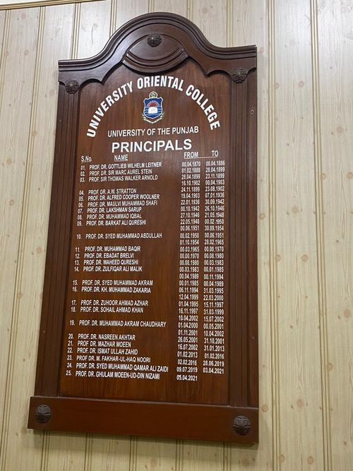
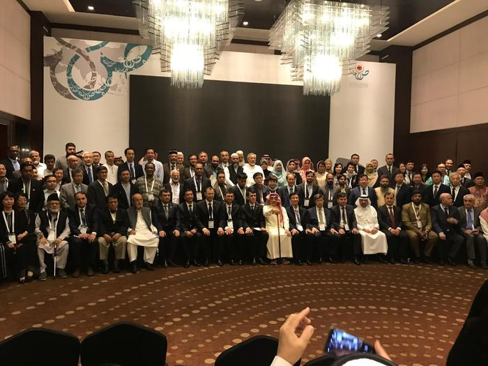
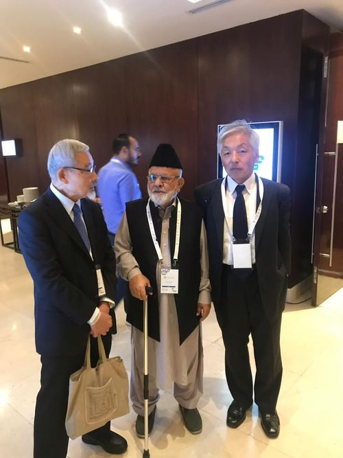
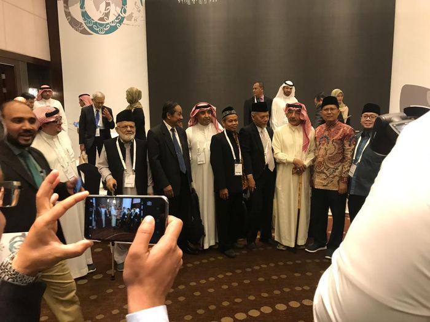
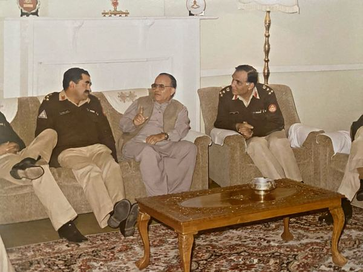
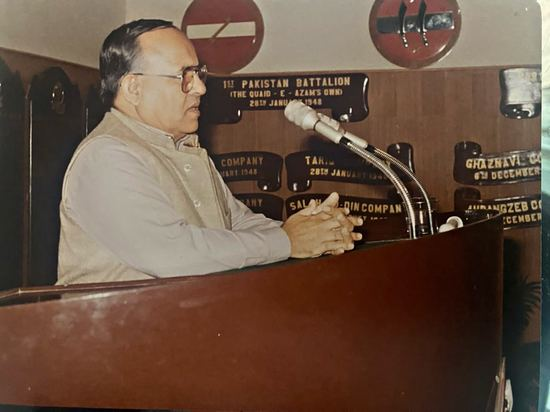
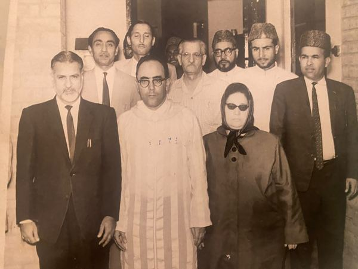
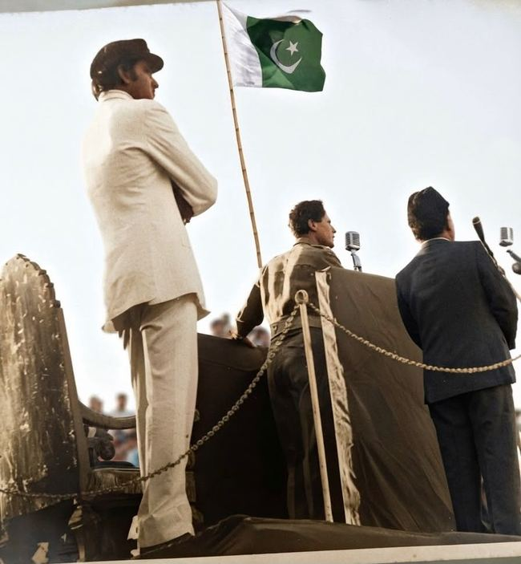
Family
Wife & Children
Dr. Zahoor Ahmad Azhar is survived by his wife and children, who carry his memory forward.
 Pakistan
Pakistan Egypt
Egypt Morocco
Morocco Algeria
Algeria Iraq
Iraq Iran
Iran Kuwait
Kuwait UAE
UAE